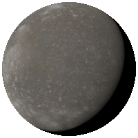

In the past, some scientists thought of Callisto as a boring "ugly duckling moon" and a "hunk of rock and ice." That's because the crater-covered world didn't seem to have much going on — no active volcanoes or shifting tectonic plates. But data from NASA's Galileo spacecraft in the 1990s revealed Callisto may have a secret: a salty ocean beneath its surface. That finding put the once seemingly dead moon on the list of worlds that could possibly harbor life.
Namesake
Callisto was discovered Jan. 7, 1610, by Italian scientist Galileo Galilei along with Jupiter's three other largest moons: Ganymede, Europa and Io. Callisto is named for a woman turned into a bear by Zeus in Greek mythology. Zeus is identical to the Roman god Jupiter.
Potential for Life
Callisto is on the list of possible places where life could exist in our solar system beyond Earth. Data gathered by the Galileo spacecraft and from models created by scientists indicates Callisto may have a salty ocean that's interacting with a layer of rocks about 155 miles (250 kilometers) beneath the surface, key conditions for creating life. Oxygen, another potential sign of life, has been detected in the exosphere.
Size and Distance
Callisto is Jupiter's second largest moon after Ganymede, and it's the third largest moon in our solar system. It's almost as big as Mercury. Callisto's circumference at its equator is about 9,410 miles (15,144 kilometers). Callisto orbits about 1,170,000 miles (1,883,000 kilometers) from Jupiter and Jupiter orbits about 484 million miles (778 million kilometers) from our Sun.
Orbit and Rotation
Callisto takes about 17 (16.689) Earth days to complete one orbit of Jupiter. Callisto is tidally locked with Jupiter, which means that the same side of Callisto is always facing Jupiter.
Callisto is about 1.8 times farther from Jupiter than Ganymede, 2.8 times farther than Europa and 4.5 times farther than Io, Jupiter's closest large moon. Jupiter and its moons orbit about 484 million miles (778 million kilometers) from our Sun. It takes the Jovian system—Jupiter and all of its moons—about 12 Earth years to complete one orbit of the Sun.
Formation
Scientists think Callisto and Jupiter's other satellites formed in the disk of materials left over from Jupiter's formation.
Structure
Callisto has an icy surface covered by craters of various shapes and sizes, including bowl-shaped craters and craters with multiple rings. Data gathered by the Galileo spacecraft indicate Callisto may have a subsurface ocean, and scientists estimate it may be 155 miles (250 kilometers) below the surface. Research indicates that this ocean may be located deeper beneath the surface than previously thought, or may not exist at all. If there is an ocean, it may be interacting with rocks, giving Callisto a chance of supporting life. Callisto's interior may have layers of ice mixed with rock and metal, possibly extending to its center.
Surface
Callisto's rocky, icy surface is the oldest and most heavily cratered in our solar system. The surface is about 4 billion years old and it's been pummeled, likely by comets and asteroids. Because the impact craters are still visible, scientists think the moon has little geologic activity—there are no active volcanoes or tectonic shifting to erode the craters. Callisto looks like it's sprinkled with bright white dots that scientists think are the peaks of the craters capped with water ice.
Atmosphere
Scientists announced in 1999 that the Galileo spacecraft detected a very thin carbon dioxide exosphere—an extremely thin atmosphere—on Callisto during its observations in 1997. More recent research indicates Callisto also has oxygen and hydrogen in its exosphere.